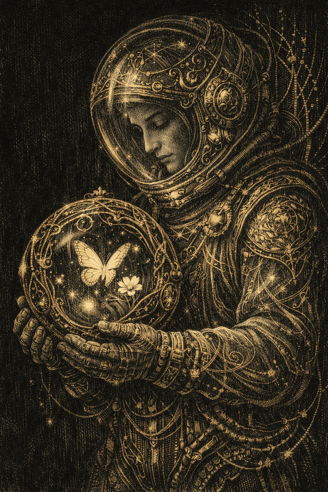
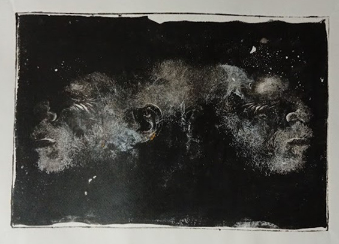
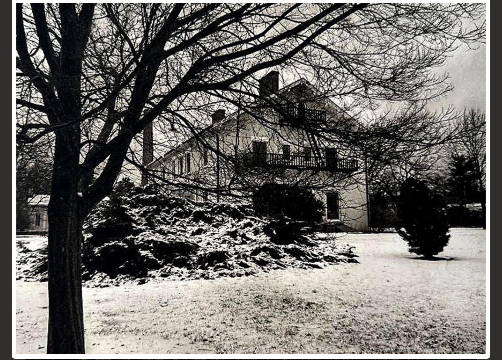
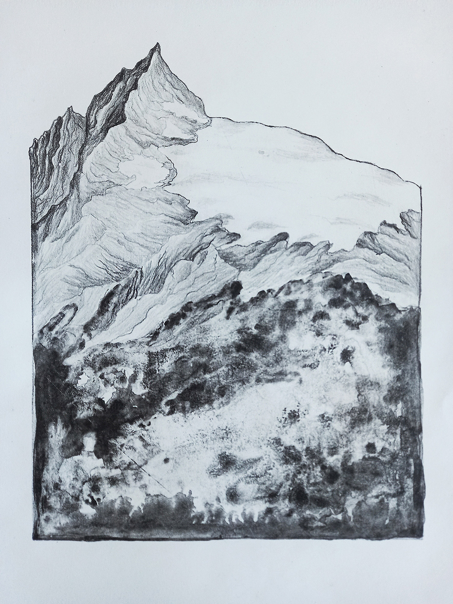
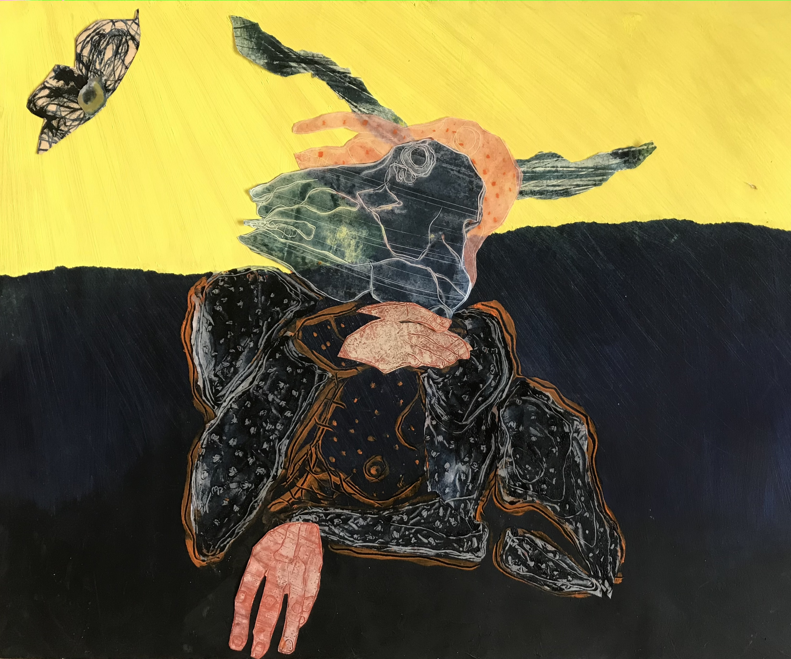
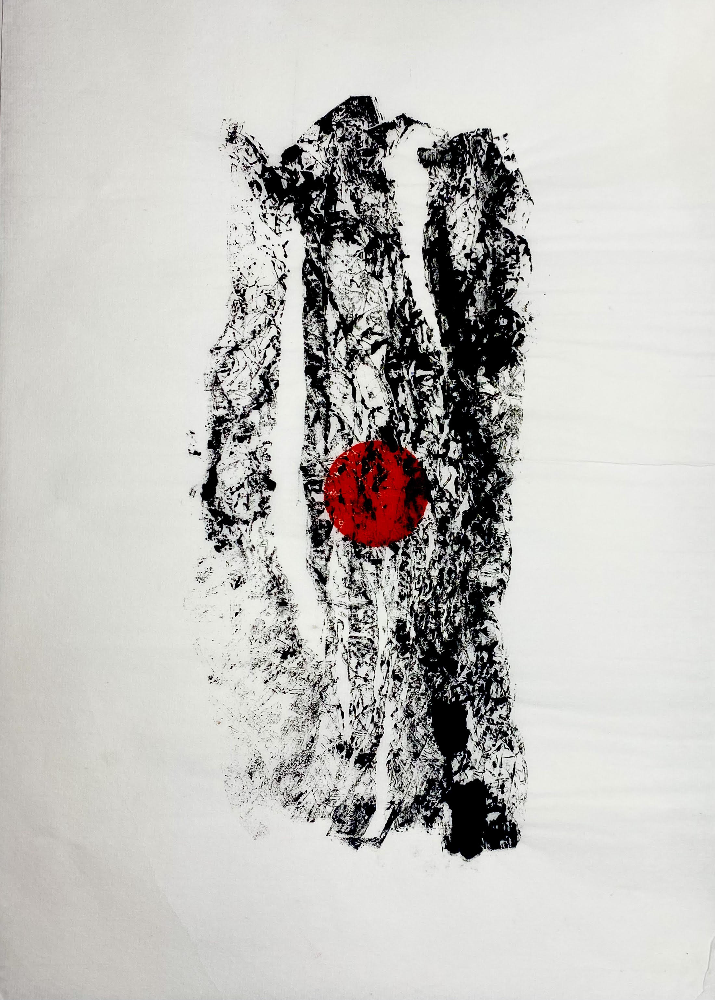

01
The Reliquary of Life
Alpha Ross
Finland
Digital Engraving / AI-Generated
2026
An international print exhibition bringing artists together through printmaking, dialogue, memory and shared experience.
Prints of Hope is an international print exhibition presented by The Printmaking Lab, Sri Lanka.
The exhibition invites artists from different countries, cultures and artistic backgrounds to respond through printmaking to questions of memory, experience, conflict, humanity and hope.
Artists work across different printmaking approaches, allowing the exhibition to become a meeting point between traditional, contemporary and experimental forms of print.
We choose to respond through marks, ink, pressure, repetition and memory.
Printmaking is not simply a technique. It is an act of making a trace — an image transferred from one surface to another, carrying evidence of an encounter.
The exhibition creates a space between conflict and conscience, between memory and the present, and between individual experience and shared humanity.
Every print can become a witness. Every image can carry a memory. Every mark can open a space for dialogue.
Hope is not passive. Hope is an action.
The exhibition welcomes works made through a broad range of printmaking practices and experimental approaches.
Relief printmaking
Relief printmaking
Unique printed image
Experimental printmaking
Contemporary image making
Expanded print practices
Prints of Hope brings together artists from different countries and artistic backgrounds through the language of printmaking.
The exhibition explores memory, experience, humanity, conflict and hope through traditional, contemporary and experimental approaches to print.

Alpha Ross
Finland
Digital Engraving / AI-Generated
2026

Anusha Gajaweera
Canada
Mixed Media / Linocut on Paper
38 × 50 cm · 2025

Buddhika Nakandala
Sri Lanka
Monoprint
30 × 45 cm · 2026

Don Kiriella
USA
Photopolymer Intaglio
22 × 27 in
Hahnemühle Copperplate 300 GSM

Edwin García
Argentina
Lithograph
30 × 40 cm · 2025
Black ink on cotton paper

Federica Frati
Italy
Monotype and Collage on Paper
50 × 70 cm

Miguel Barros
Canada
1/1 · Multi-print
27 × 38 cm
Acid-free Paper · 2022
Visit the complete online archive of Prints of Hope for the original exhibition information, submission details and related material.
View Full Exhibition ArchiveSri Lanka
An artist-led platform for printmaking, exhibitions, research, workshops, collaboration and international artistic exchange.
The Printmaking Lab explores traditional, contemporary and experimental approaches to printmaking while creating opportunities for artists to share ideas, processes and experiences.
Personal Growth · Social Benefit